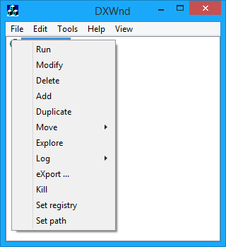

When right-clicking on the program's list, instead, the following menu will be shown:

Run |
Activates (runs) the selected task. Same as double-clicking on the list entry. |
Modify |
Allows you to view and modify the program's configuration. |
Delete |
Asks for confirmation and then deletes the selected entry. |
Add |
Prompts for all data needed to define a new task in the list. |
Duplicate |
Duplicates or clones an entry. You can modify the clone without affecting the original. This allows you to create multiple different entries with consistent settings. |
Move |
See Move. |
Explore |
Open a window explore session pointing to the program's configured install path. |
Log |
This menu is equivalent to Edit > Log. See Log. |
Export... |
Exports the highlighted program configuration to a file. |
Kill |
Kills the corresponding program. Differently from the File -> Process -> Kill command, this command would not kill the currently active program, but the selected one, no matter whether it was managed by dxWnd or not. This is the reason why sometimes the first Kill command may fail and this one is in general more reliable, at the cost of selecting the proper entry. |